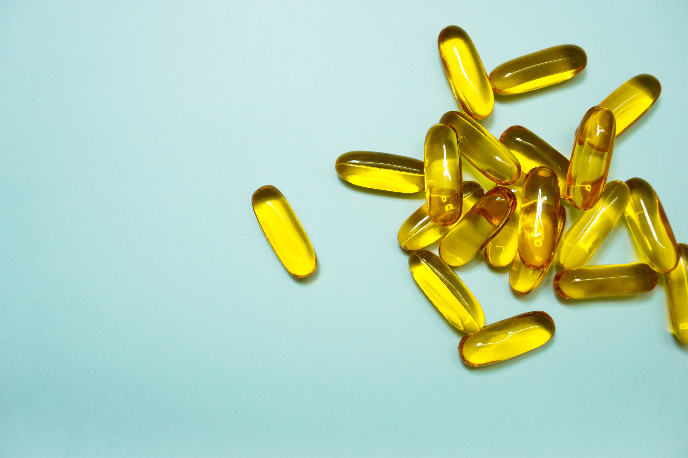

脂溶性維生素
易溶於油脂中並且耐熱的類型。
這類維生素如果攝取過多，就會存在肝臟，有時會引起過多症，所以一定要注意。
- 維生素A
- 維生素D
- 維生素E
- 維生素K

維生素A
維持皮膚眼睛健康不可或缺
- 形成鼻子、喉嚨等部位的黏膜，防止病毒入侵提升免疫力預防感冒
- 活化皮膚、頭髮、指甲等細胞以維持美肌
- 「眼睛的維生素」，形成眼睛的感光物質
- 類胡蘿蔔素也被稱為「原維生素A」，可是需要轉變為維生素A
- 在黃綠色蔬菜中含量很多
維生素D
強化骨骼的維生素
- 能夠藉由陽光照射來合成
- 形成骨骼材料的「鈣」的幫手
- 同時攝取富含維生素D的食品和富含鈣的食品，就能有效率的吸收
- 對人類而言重要的是D2和D3
- 菇類含有D2，魚類、蛋等動物性食品含有D3
維生素E
守護美麗與健康，避免活性氧傷害
- 被稱為抗老維生素
- 存在於細胞膜上，保護細胞膜，但體內無法合成，非常需要從食物中獲取
- 能夠抑制活性氧的作用而延緩老化速度
- 促進血液循環，改善手腳冰冷
- 維生素E+維生素C=抗老化、維生素E+蛋白質=預防動脈硬化
維生素K
幫助血液凝固，形成強壯骨骼
- 血液和骨骼不可或缺的維生素
- 被稱為「止血維生素」幫助血液凝固並活化凝血因子
- 協助充足攝取作為骨骼材料的鈣
- 除了從食物中獲取，也能從腸道細菌合成